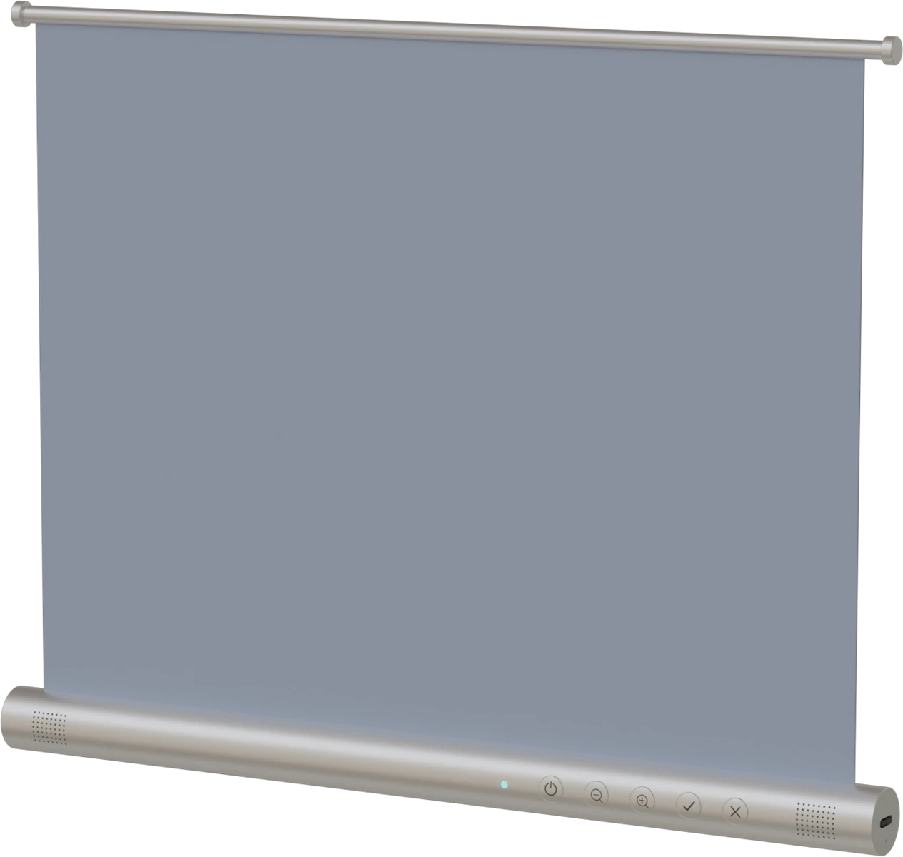
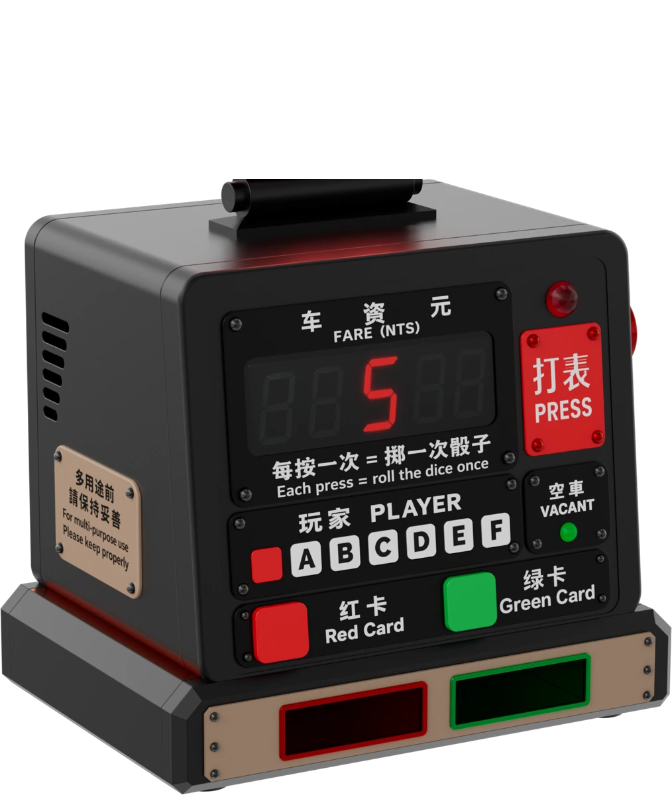
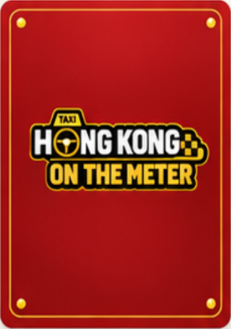

HONG KONG ON THE METER — Play the city
01 EXPLORE THE CITY

ORIGINAL FLEXIBLE DISPLAY 54 stops · 35 transfer zones
Pickup / drop-offRoad eventService eventTaxi transfer
02 / METER & CARDSVACANT · 空車


ONE ROLL PER TURN
START A SHIFT · THEN TAP 空車 / VACANT
LOCKED D—
DRIVEN0
STEPS LEFT0
RED 0/2POINT —GREEN 0/2